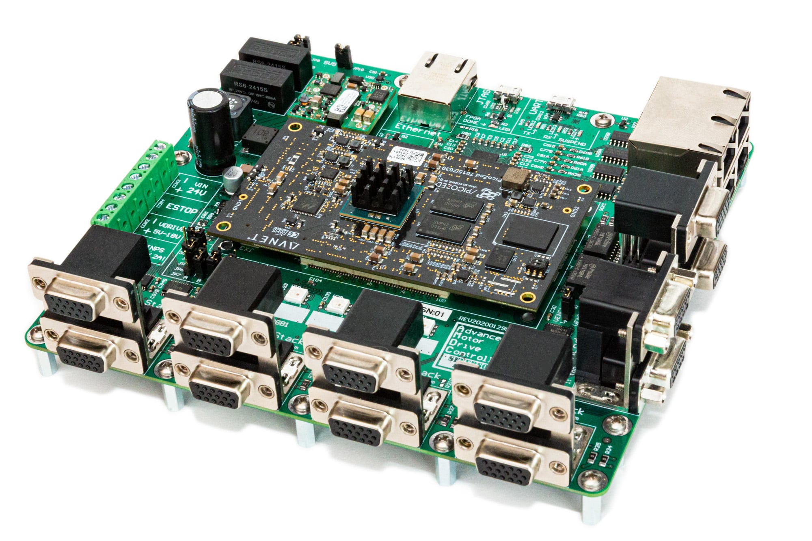

Hardware Overview#
The AMDC hardware is a collection of circuit board designs which are used to control advanced motor systems. The hardware design is open-source, modular, and research-oriented.
{kind=link}

The AMDC PCB is a carrier board for the PicoZed System-on-Module. The PicoZed is a module PCB which contains the core requirements for the Xilinx Zynq-7000 System-on-Chip. The Xilinx Zynq-7000 SoC is a powerful processor with dual-core DSPs and a tightly integrated FPGA.
Hardware Parameters#
These are for the latest hardware revision: REV20210325E.
Parameter |
Value |
Note |
|---|---|---|
System-on-chip |
Xilinx |
dual-core ARM Cortex-A9 with Kintex-7 FPGA |
Clock frequency (DSP, FPGA) |
666 MHz, 200 MHz |
firmware configurable |
Nominal input voltage |
24 V |
typical 10 W power consumption |
Host interface |
Ethernet and USB serial |
supports 1 Gbps Ethernet |
Digital PWM outputs |
48 |
arranged for 8 three-phase two-level inverters |
Integrated analog inputs |
8 |
differential bipolar \(\pm\)10 V with high CMRR |
Encoder inputs |
2 |
incremental type (differential |
Expansion ports |
4 |
3/3 differential I/O per port |
Approximate unit cost |
$1500 |
fully assembled with PicoZed, ordered in quantity 10 |
Design Software / Licenses#
All PCB designs which are a part of the AMDC Platform are designed in Altium Designer. To contribute and modify PCB designs, the user needs a valid license for Alitum.
However, to order and use the PCBs, the “compiled” design files are provided in the open-source repo. This includes all the files needed to build the AMDC and get it working. Therefore, no users of the AMDC Platform need to have access to Altium, only designers and contributors.
Supported Hardware#
There are several revisions of the flagship AMDC PCB design which are compatible with the supplied firmware.
The hardware revisions are denoted by single letters: A is the first revision, B is the second, etc.
Each AMDC hardware revision improves and changes the design, striving towards a more robust hardware platform.
The latest revision is the REV E PCB design.
This is the 5th revision and is considered stable.
Note that the AMDC firmware supports both REV D and REV E hardware.
Previous hardware revisions (i.e. REV A, REV B, and REV C) are no longer supported.